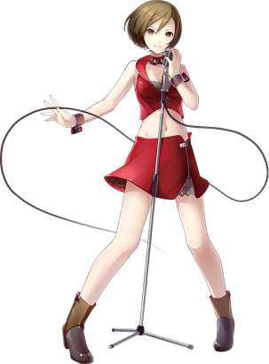
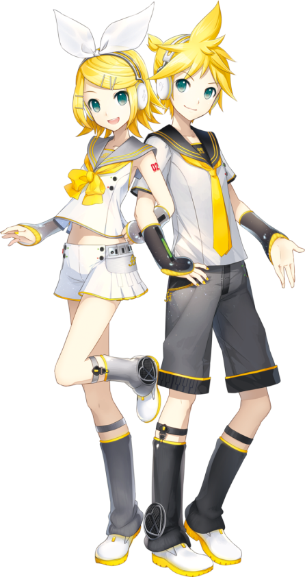

VOCALOID (от англ. vocal — «вокал» и англ. android — «андроид») — программное обеспечение фирмы Yamaha Corporation, имитирующее голос поющего человека на основе и текста. Использует технологию полного синтеза речи по правилам с использованием предварительно запомненных отрезков естественного языка. Включает в себя редактор для работы с текстом и мелодией, синтезатор поющего голоса и библиотеки исполнителей, также называемых вокалоидами. При создании таких библиотек используется голос человека-вокалиста, который разбивается на небольшие фрагменты, обрабатывается и записывается в базу данных. Существуют тестовые образцы пения, показывающие сходства и различия между исходным человеческим голосом и соответствующим ему синтезированным голосом вокалоида. При работе с программой пользователь вводит мелодию нового произведения, указывает для каждой ноты соответствующую фонему песни в формате X-SAMPA, после чего VOCALOID, используя выбранную библиотеку исполнителя, синтезирует пение. Предусмотрена возможность изменения тембра, скорости, частот, наложения различных эффектов[1][2].
Miku Hatsune
вторая голосовая героиня на Vocaloid 2 и первая — в линейке Character Vocal Series от Crypton Future Media, выпущенная 31 августа 2007 года. Многие ошибочно полагают, что она была первым вокалоидом, выпущенным на движке V2, однако первой была выпущена Sweet Ann. Название-имя выбрано путём сочетания слов «хацу» (яп. 初, первый), «нэ» (яп. 音, звук) и «Мику» (яп. ミク, будущее)[28]. Основой для «голоса» Мику Хацунэ стал голос японской сэйю Саки Фудзита (англ. Saki Fujita). В отличие от других речевых синтезаторов, программа настроена, прежде всего, на создание J-pop-песен, ен и других жанров
popular
представляет собой DTM-программу, разработанную Crypton Future Media. Использует старый движок Vocaloid, предшествующий семейству Vocaloid 2. Её голос полностью синтезирован компьютером, поэтому звучит более грубо, чем у остальных вокалоидов. За основу голоса взята японская певица Мэйко Хайго, чей голос подходит для разных жанров. Мэйко может петь любые песни: от поп-музыки, рока, джаза и R&B до детских. Она коротковолосая шатенка, её глаза карие; носит короткую юбку красного цвета с белым ремешком, жилетку того же цвета и коричневые сапоги. По ошибке ей предписывают фамилию Сакинэ, хотя это не правильно — эта фамилия принадлежит фанлоиду (фанатскому вокалоиду) Мэйко Сакинэ, «более молодой» версии оригинальной Мэйко. Мэйко — первый женский вокалоид первой серии, выпущенный в Японии. Crypton подтвердила, что Мэйко будет иметь дополнения: 4 февраля 2014 года вышла Мэйко на движке Vocaloid 3 (Straight, Dark, Whisper, Power, English), поющая на японском и английском.
popular
Meiko
Kagamine Rin・Len
popular
popular
Кагамин Рин является официальным персонажем-талисманом программного обеспечения для певческого синтезатора Yamaha VOCALOID2, разработанного и распространяемого Crypton Future Media и выпущенного 12 декабря 2007 года под названием «Character Vocal Series 02 Kagamine Rin». Ее дизайн был создан иллюстратором KEI, а ее голос предоставлен актрисой асами Симода.
Кагамин Лен является официальным персонажем-талисманом программного обеспечения для певческого синтезатора Yamaha VOCALOID2, разработанного и распространяемого Crypton Future Media и выпущенного 12 декабря 2007 года под названием «Character Vocal Series 02 Kagamine Len». Его дизайн был создан иллюстратором KEI, а его голос предоставлен актрисой асами Симода.
Вопреки распространённому заблуждению, данные персонажи не являются ни близнецами ни любовниками. На деле же они представляют собой отражение друг друга с изменённым полом[11].Тем не менее, по изначальной задумке Crypton Future Media, Inc. они действительно должны были стать официальными близнецами, однако в итоге данная идея не была одобрена[12].Во время разработки Kagamine Rin/Len Append Ватару Сасаки[13] объявил, что Рин и Лен имеют одну душу на два тела[14].
Megurine Luka
третий пакет в Character Vocal Series, была выпущена 30 января 2009 года[33]. Её фамилия образована от слов «мэгури» (яп. 巡, обходить по кругу, циркулировать) и «нэ» (яп. 音, звук). Голос Луки — голос двадцатилетней девушки, и она может петь как на японском, так и на английском языках. Её голосовым провайдером стала сэйю Ю Асакава (англ. Yū Asakawa). Над внешностью Луки работал мангака KEI, ранее нарисовавший Mику, Рин и Лена, однако, в отличие от последних, её костюм основан не на японской школьной форме. Лука — следующий персонаж серии Vocaloid 2 от компании Crypton, обновлённый до Vocaloid 4 (19 марта 2015 года), которого изначально хотели обновить до V3.
popular
Kaito
голос программы Vocaloid, созданный Crypton Future Media и, как и Мэйко, использующий старый движок Vocaloid. Голос Кайто дал певец Наото Фууга. Назвать продукт «КАЙТО» предложил общественности Shu-tP. Кайто может петь всё — от гимнов и детских песен до R&B и поп, но его лучший стиль — это поп-баллады. Он был создан как мужской аналог Мэйко. У него синие волосы и глаза, он носит белый плащ, фиолетовые брюки, синие сапоги и длинный синий шарф. Также, как и с вокалоидом Мэйко, Кайто добавляют фамилию Шион, которая не является официальной, т. е. у его тоже нет официальной фамилии.